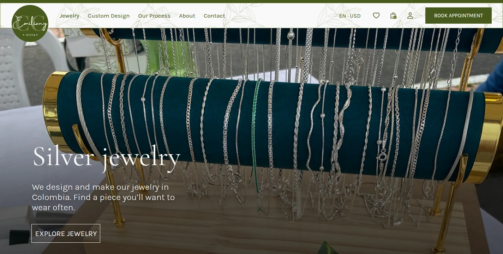
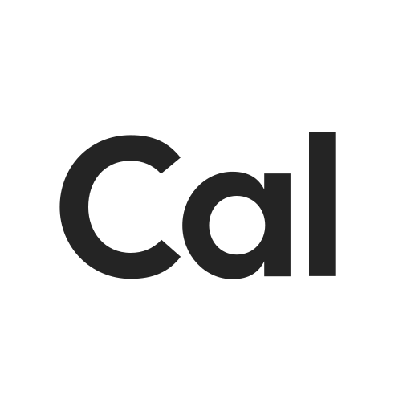
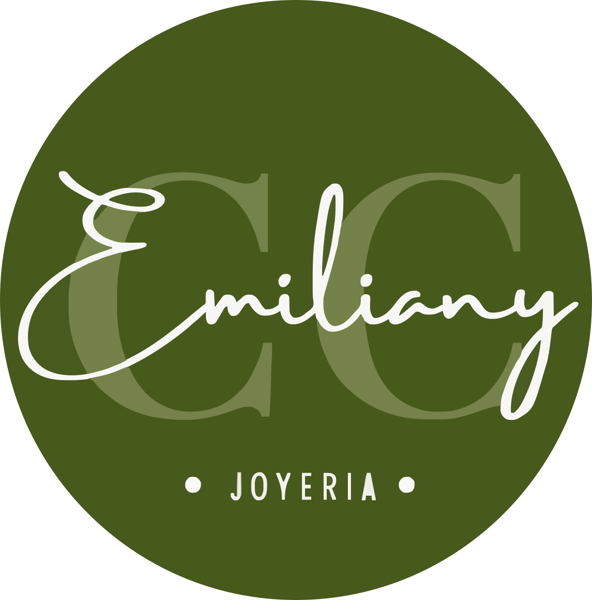
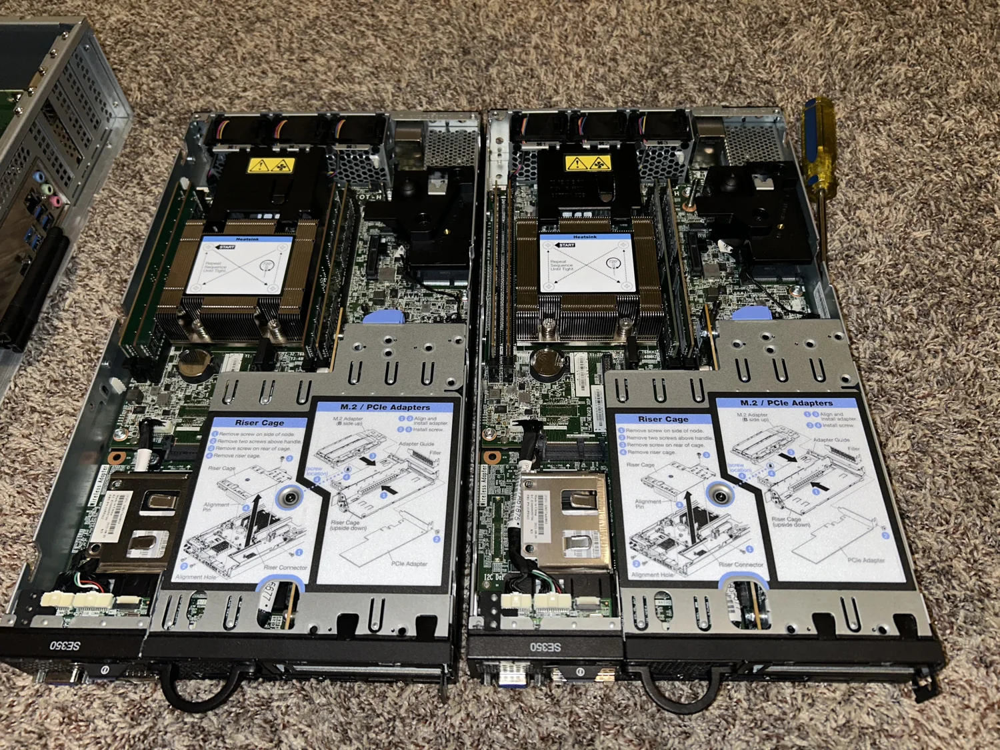
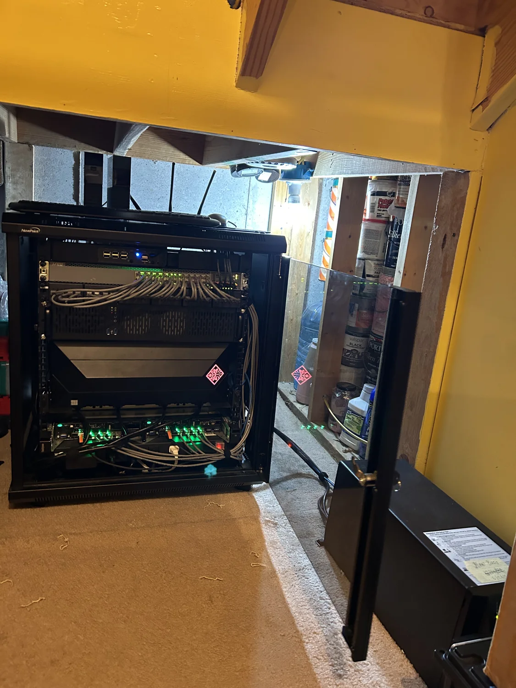
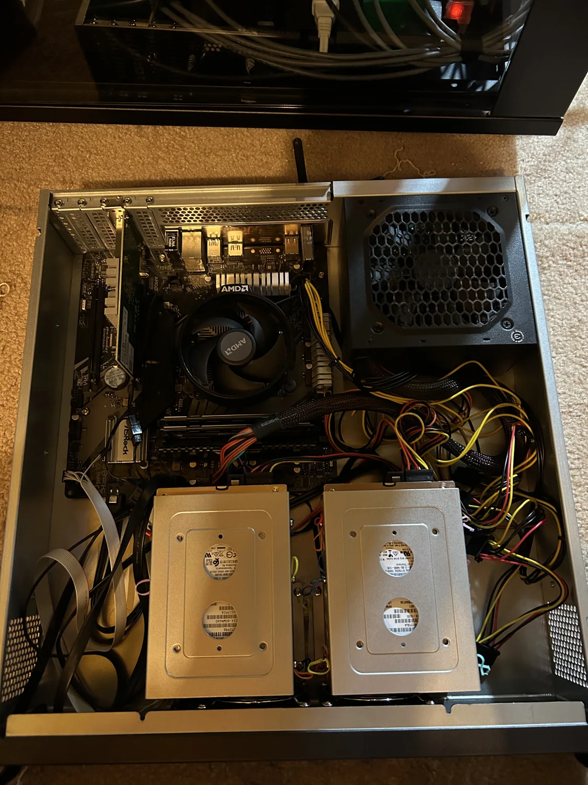

Current employer
Vector Digital · Since July 2025

Hi, I’m
System Administrator
I support Windows and Linux systems, troubleshoot networks, and automate infrastructure. I do this work for clients and on my own Kubernetes cluster.
I build infrastructure from code. In my Antalos homelab, I define virtual machines in Git and use Argo CD to deploy applications to Kubernetes.
I use this homelab to test how I provision machines, deploy applications, and monitor the services they run.
I like tracing problems from the application through the network to the server. I learn by building systems and writing down the setup and fixes so I can repeat them.
Vector Digital · Since July 2025
3 Proxmox hosts · 5 Kubernetes nodes · NAS · OPNsense router
BAS in IT – System Administration
I built the infrastructure behind Vector Digital’s managed open-source services for small businesses. At Emiliany, I build the storefront and connect it to the systems the business uses.
— Present
— Present


I built the bilingual storefront and connected it to the services that handle accounts, orders, marketing, and support.

I explored an AI browser agent that identifies page controls and uses them to act on a web page.

My copy of Cal.diy includes the source and setup instructions for self-hosted scheduling.
Three doors
Every engagement starts with one of three conditions. Pick the sentence that sounds like your business.
FileMaker, Access, the internal app nobody dares touch. I replace it with software you own, without losing the workflow your staff depend on. Proof: 28,062 invoices migrated with zero operational downtime.
Legacy System ReplacementWires, deposits, quotes, staged settlement: transactions hosted carts cannot model. I build commerce platforms that close them. Proof: six-figure monthly Google Shopping revenue on an owned platform.
High-Ticket Commerce PlatformsAnd you are not giving a chatbot the keys. I build governed AI agents inside your AWS account, with human approval on every consequential action. Proof: three production agents, used daily by a non-technical operator.
Production AI AgentsI build open-source infrastructure, business websites, and online stores in accounts you control. You keep administrator access, the project code, and your data. You pay no software license fees for the agreed open-source stack, and I train one person to run it with AI and runbooks.
I configure access, monitoring, and backups in accounts you control.
Explore InfrastructureI build responsive business sites and check their performance before launch. You keep control of the content and can review the estimate before work starts.
Explore Web DevelopmentI build online stores that connect your catalog, payments, and inventory. I plan capacity around the size of your catalog and order volume.
Explore E-commerceCan you set up everything my team needs? We need a place to share files and track projects.
Yes. We’ll go through how your team works, then I’ll install the apps you need, set up access and backups, and test them with you.
Can I handle updates without an IT team?
Yes. I’ll walk you through an update and show you how to use AI with your runbooks. We’ll check what to back up, investigate errors, and verify AI suggestions before making changes.
Select a tool to see how I use it to run applications or manage infrastructure changes.
Kubernetes runs the applications in Antalos. I define their deployments, networking, and storage in configuration files.
Three Proxmox hosts run the virtual machines for my Talos Kubernetes cluster and Debian services.
I run Talos on five Kubernetes nodes and use its machine configuration to repeat the cluster setup.
Debian runs services alongside my Kubernetes cluster. I use Ansible to configure those virtual machines.
OpenTofu defines the Antalos virtual machines in Git, so I can review changes and recreate them.
Ansible configures my Debian machines after I create them. Playbooks keep routine setup steps consistent.
Argo CD applies the application configuration in Git to Kubernetes and shows me when deployments drift or fail.

I keep infrastructure configuration, application files, and documentation in Git so I can review changes and trace them to a commit.
In progress
Information Technology – System Administration
Earned
Coursework
I built the storefront in English and Spanish. I connected Medusa for accounts and orders, Odoo for customer contacts, Mautic for email preferences, and Zammad for support.
Explore Emiliany
 EMILIANY · COLOMBIAN SILVER
EMILIANY · COLOMBIAN SILVERIndulge in what we offer.
The Next.js storefront connects to these services.
Authenticates customers who choose Google sign-in.
Manages customers, products, carts and orders.
Keeps customer contacts available to the business.
Manages marketing contacts and email preferences.
Turns contact messages into support tickets.
Follow a checkout, sign-in, profile update, or support request.
The storefront shows the collection. Medusa handles products, carts, and orders.
Browse jewelry in English or Spanish.
Load products and prices, manage the cart, and submit checkout.
Find order history and manage profile and addresses.
Medusa supplies the live catalog. The preview uses sample items. Odoo receives customer contacts, with product sync disabled.
Customers can sign in with Google or with an email and password.
Google authenticates the customer through Medusa’s Google provider.
New customers accept the terms and privacy policy before Medusa creates their account.
The storefront keeps the session in a secure HttpOnly cookie.
Customers must enter their existing account password to link a Google sign-in with the same email address. Staff use a separate sign-in. Customers choose whether to receive marketing email.
Medusa stores customer profiles. Background jobs update the other business tools.
Medusa saves profile changes and queues updates for the other tools.
Odoo receives contact details. Mautic receives contact details and marketing preferences.
Customers choose whether to receive marketing emails. The shop picks up opt-outs from Mautic.
Customers can finish signing up while background jobs update Odoo and Mautic. The jobs retry failed updates. Newsletter signups go to Mautic alone. A customer record by itself gives no permission to send marketing email.
The contact form sends customer questions to the support queue.
The customer fills out the storefront contact form.
The contact API validates the request and uses Redis to limit abuse and duplicate submissions.
The team handles the request in its support queue. Zammad sends the acknowledgement.
The form blocks duplicate messages for 24 hours and holds uncertain deliveries for a later check. To add a follow-up to the support queue, customers can submit the form with their ticket number. Email replies to the acknowledgement do not go straight into Zammad.
I run the services on Antalos, my Kubernetes platform. I keep deployment settings in Git for review and use Argo CD to apply them.
I set up and operate the servers, storage, and segmented network for Antalos. I use the lab to deploy services and troubleshoot problems from the hardware through the virtual machines. Watch the application tour →
The rack holds a firewall, switch, shared storage, and three Proxmox hosts. Two Lenovo servers run beside a reused HP Omen with a GPU.
I buy used hardware and repair it or reuse parts. I route the cables through a Cat6 patch panel and use an APC UPS and a PDU for power.
OPNsense runs on a Beikong H31F with an Intel N150, 8 GB RAM, three 2.5 GbE ports, and two SFP+ ports. A Juniper EX3300-24T provides 24 gigabit copper ports and four 10 GbE SFP+ ports.
Dedicated firewall · Managed switching

Each Lenovo node has a Xeon D-2143IT with 8 cores / 16 threads and 48 GB ECC RAM. I use Proxmox on these servers to run Talos nodes, Debian workloads, and HAProxy VMs.
96 GB ECC RAM across the pair

This Proxmox host has an Intel Core i7-9700KF and 16 GB of RAM. I plan to pass an RTX 3060 with 12 GB of VRAM through to a Debian VM for LLM inference and run Talos control plane and worker VMs on the same host.
GPU passthrough · Dedicated inference VM

The 2U, four-bay NAS uses a Ryzen 3 2200G, a gigabit management link, and a separate SFP+ link. I use an APC SUA1500 UPS with an AP9630 network card and a 12-outlet PDU.
Shared storage · Networked UPS management
Management uses dedicated gigabit access links on VLAN 20. The Proxmox hosts carry internal and DMZ service traffic over 10 GbE trunks on VLANs 30 and 40.
Proxmox, Lenovo XCC, TrueNAS, and UPS management interfaces.
Proxmox VM networks use SFP+ trunks. TrueNAS also connects over SFP+ for storage traffic.
Simplified network plan. Firewall rules control access between segments.
General client internet access.
Device administration; outbound internet.
Inward-facing services and connected IoT.
Outward-facing services in a separate zone.
Internal access with no internet access.
Isolated experiments with no network access beyond the segment.
A separate network for work applications.
My VM plan calls for a Talos control plane node and worker on each Proxmox host. The Lenovo servers also run HAProxy and Debian workloads for testing, Jellyfin, and Immich machine learning. An Intel Arc A310 goes to the media VM.
Proxmox runs the VMs, Talos runs Kubernetes, and Antalos defines the services on top.
EXPLORE THE APPLICATION STACK →Open a photo to see it full size.
I used my October 2026 hardware inventory and network and VM plans for this write-up. The photos span several stages of the build, and the VM plan may differ from the running setup.